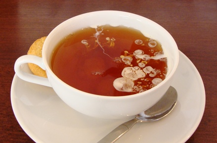
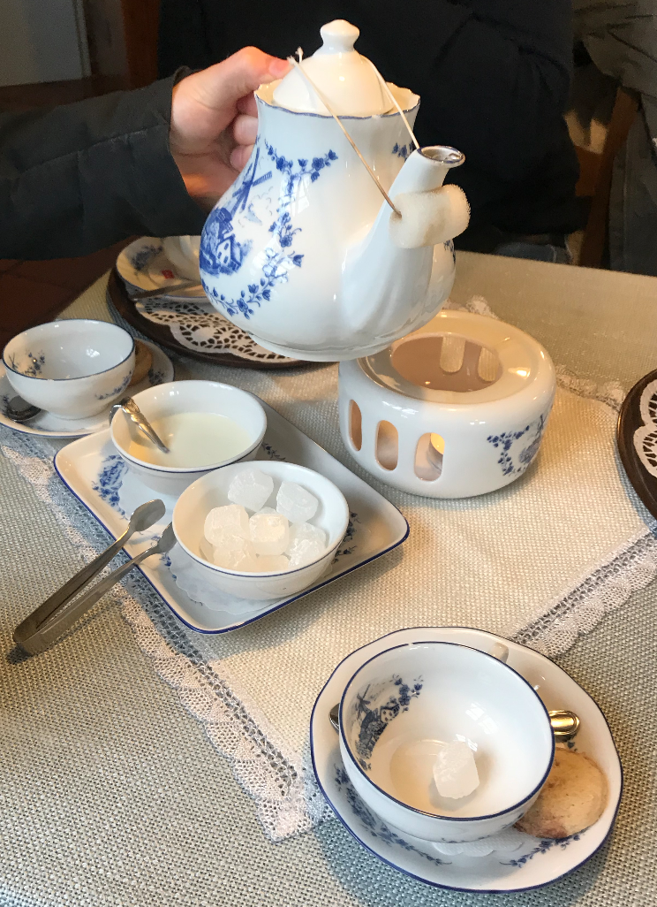

Tea Ceremonies
It all started with a cup of tea.
On a windy, somewhat rainy, and definitely chilly day, us three interns set off on an adventure to explore the Northern German countryside. After passing by many of the tall power-generating windmills, we stumbled upon a small antique one in Aurich which we could climb. We were able to learn about the internal mechanisms of the windmill by seeing the gears first-hand and could view the peaceful countryside from the top.
The view was lovely, but the wind eventually brought us back inside, with cold hands and chattering teeth. Searching for some food to warm us up, we went next door. What we then discovered was a tea house, where they served cakes, coffee, and tea. We ordered coffee and tea, and we were also served a history lesson.
For approximately 300 years, East Frisians have been taking part in tea ceremonies as a ritualistic way of drinking tea. This has developed over these 300 years as a tea culture in Lower Saxony that is appreciated by locals and visitors alike.
The tea ceremony begins with the 'Kluntje'. One must grab the Kluntje from the sugar bowl with the tongs and place it gently into their teacup. When the tea has been steeped in the teapot, the tea is poured into the teacup on top of the Kluntje, which makes a crackling noise as the tea begins to dissolve the rock sugar.
Next, one must pour a small amount of cream into the teacup from the side. The cream then drops to the bottom of the cup and rises again in the shape of a cloud, called 'Wulkje'.
 Image from The Right Tea
"Generally, the tea is not stirred, so that with each sip a different taste is experienced: first the mild cream, then the strong tea and finally the sweetness of the rock sugar." -UNESCO
As the sugar dissolves over time, the tea becomes sweeter, giving a new experience with every sip.
 East Frisian Tea Ceremony in Aurich